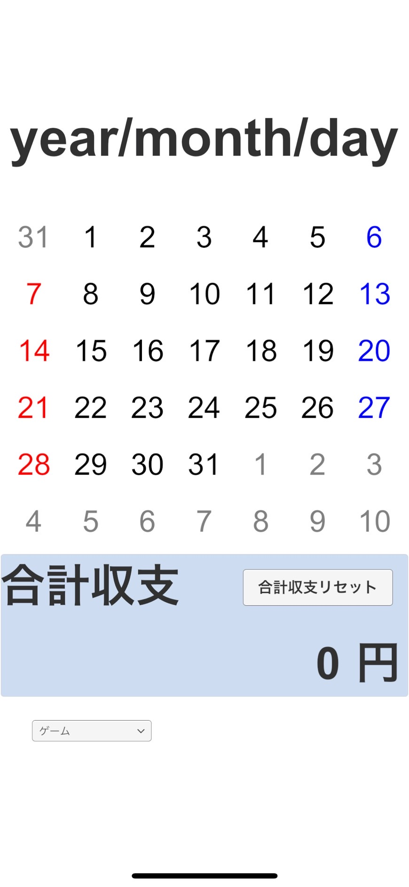
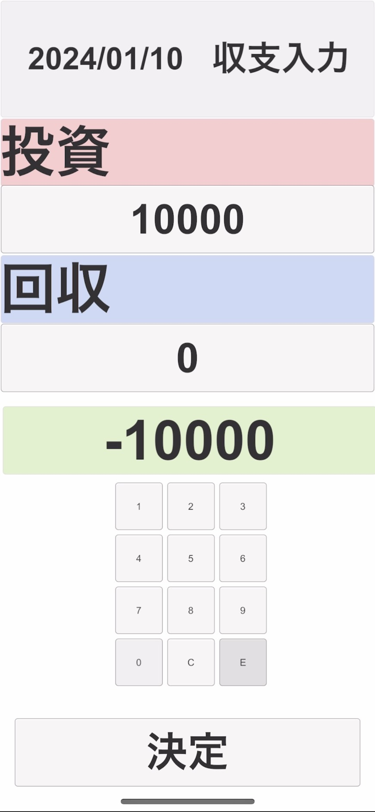
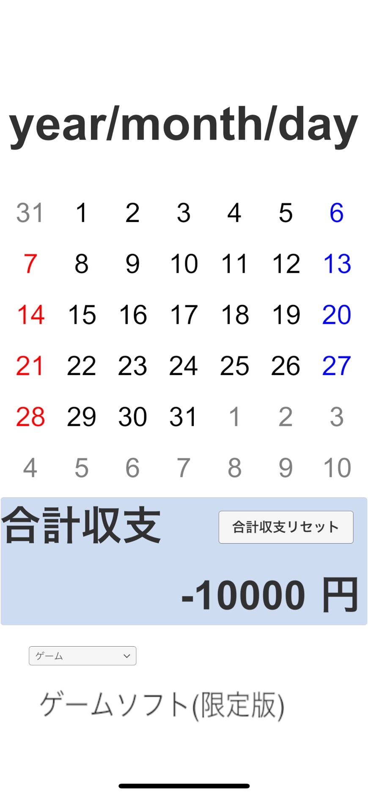

使い方を順をたどって説明していく
タイトル画面では，タッチすることによって次の画面へ遷移する．
この画面では，一か月分のカレンダー，合計収支，結果に応じて出力された物が表示される． 画面内のカレンダーの日付を押すことによって，次の入力画面に遷移する．
この画面では，その日の収支を入力する画面である． 投資，回収のそれぞれの入力するための枠をクリックすることによって，キーボードが出現する． そこにその日の投資，回収を入力し，「E」を押すことによって各値が保存され，その日の収支が出力される． 完了をすることによって，前のカレンダーの画面へと遷移する．
この画面では，先ほどのカレンダー画面に結果が反映されて，収支に応じてどのような物を買うことができたのかが表示されている． 別日の入力を行いたい場合には，その日をクリックすることによって，また入力画面へと遷移する．
